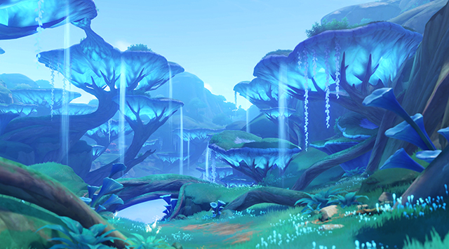

Gandharva Ville:
The city above the forest.
"The city of wisdom is ours, as is the forest of ignorance. Atop the tree lies the remnants of the
kingdom of lost dreams."

Pardis Dhyai:
The garden of deep thought.
Countless flowers lie within the garden, each more lovely than the most beautiful crystalfly. This is
the paradise of people of goodwill.

Caravan Ribat:
The frontier beneath the high wall.
The mighty wall defends against the searing sandstorms but has also blocked the spread of wisdom's
blessing. Is divine wisdom not meant to shine on all people?

Port Ormos:
The harbor betwixt the two trees.
"Bah! The lectures of the sages are beyond boring. Why don't we get ourselves some fine wine garnished
with floral honey and set out on a journey across the seven seas?"

Sumeru City:
The root of all wisdom on earth.
Under the luxuriant Divine Tree, the sages of the academy city have accumulated all the knowledge there
is to be gathered. Welcome to Sumeru, O Traveler seeking answers.

Mawtiyima Forest:
The forest of enormous fluorescent mushrooms.
Here, giant mushroom caps construct a canopy of light, obscuring the sun and the moon. Is this a
man-made paradise, or a garden waiting to bloom?

Apam Woods:
The forest of a rain without end.
The towering trees reach for the sky freely. Perhaps one day its branches will touch the stars. But
under their canopy, the rain has never ceased.

Devantaka Mountain:
The mountain that saw the fall of the demons.
Hidden among the valleys and verdure, lies a massive machine that has lost its light. The circular holes
seem to serve as its eyes, as it silently observes the passage of time.